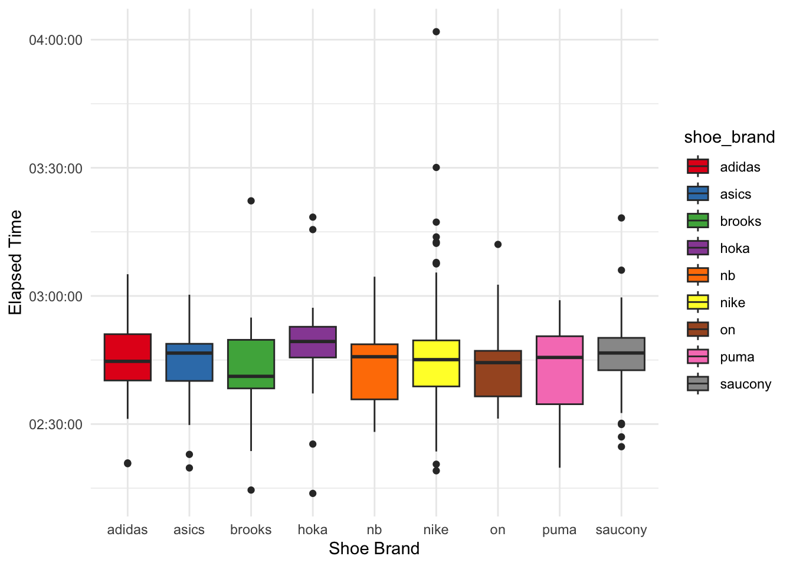

Analyzing a Sample of Strava Data on the Boston Marathon
You know you’ve reached peak Ph.D. thesis avoidance when you decide that scraping 1000+ Strava activities from the Boston Marathon seems like a totally reasonable use of your time. But here we are.
Instead of writing about my actual research, I was wondering what kind of gear folks wear at the Boston Marathon and whether you could see some correlations with their Relative Exertion and finishing times.
The Strava API didn’t prove to be very generous, so I built a little web scraper. I love web scraping, it’s a bit like solving a little sudoku – and I feel like a proper hacker, hihi.
Step 1: Finding the Segment
The first half of the Boston Marathon course exists as Segment 12666537 on Strava. I did not go for a longer segment, since some people might choose to end their activity early or so. I will, of course, also miss folks who don’t start their watch right at the start or whose watches have GPS glitches. However, for 2025, around 6,000 segment times were recorded on this approximately 21km segment.
Seeing full Strava segment lists requires you to be a summit user, so I had to log into my account. Also, it’s a dynamic website. So, I ended up using selenium for data acquisition.
Show the code
from selenium import webdriverfrom selenium.webdriver.common.by import Byimport pandas as pdimport randomimport timeimport re# opens a Firefox windowdriver = webdriver.Firefox()# Navigate to the websitedriver.get("https://www.strava.com/segments/12666537?filter=overall") ## go through log in procedure manually in the browser and select segment efforts for 2025
Step 2: Collecting Activity URLs
First, I needed to gather all the activity URLs. The segment leaderboard is paginated, so I wrote a loop to click through pages and collect links. I added random delays because I’m not a monster and the website had some latency (the latter could have also been achieved – and made more robust – by asking selenium to wait until the website was done building).
Show the code
activity_urls = []def get_links(): specific_links = driver.find_elements(By.CSS_SELECTOR, ".track-click:nth-child(3) a") specific_urls = [link.get_attribute("href") for link in specific_links]return specific_urlsi =0while TRUE: activity_urls.append(get_links()) time.sleep(random.uniform(5, 10))next= driver.find_element(By.CSS_SELECTOR, ".next_page a")next.click()temp = pd.DataFrame({'url': activity_url_list})temp.to_csv("files/boston_m_urls_2025.csv")
Step 3: Scraping Individual Activities
This is where things got interesting (read: tedious). For each activity URL, I needed to:
Navigate to the activity
Click on the “Overview” tab
Extract stats (distance, pace, time)
Grab device and shoe information
Not get blocked by Strava (hence the generous random delays)
My first attempt had some retry logic for when elements didn’t load properly (the site proved to be fairly sketchy and unstable):
Show the code
for url in current_urls: time.sleep(random.uniform(20, 60)) driver.get(url) time.sleep(random.uniform(2, 9)) overview = driver.find_element(By.LINK_TEXT, "Overview") max_attempts =4 attempts =0 stats = [''] gear = ['']while attempts < max_attempts and (len(stats[0]) <1orlen(gear[0]) <1): overview.click() time.sleep(random.uniform(2, 10)) stats = driver.find_elements(By.CSS_SELECTOR, ".inline-stats") stats = [element.text for element in stats] gear = driver.find_elements(By.CSS_SELECTOR, ".device-section") gear = [element.text for element in gear] attempts +=1 date = driver.find_elements(By.CSS_SELECTOR, "time") date = [element.text for element in date] temp = pd.DataFrame({'date': date[0],'run_data': stats,'gear': gear }) result = pd.concat([result, temp], ignore_index=True)
Eventually, I refined my approach to directly construct the overview URL using a RegEx which stabilized things. I hit a couple of runtime errors, so in the end I stopped my collection after getting the ~1000 runners who had finished the first half Strava segment fastest:
Show the code
for url in current_urls: time.sleep(random.uniform(3, 10)) driver.get(url) time.sleep(random.uniform(2, 9)) current_url = driver.current_url new_url = re.sub(r'segments.*', 'overview', current_url)if new_url == current_url: new_url = re.sub(r'#.*', '/overview', current_url) driver.get(new_url) time.sleep(random.uniform(2, 5)) stats = driver.find_elements(By.CSS_SELECTOR, ".inline-stats") stats = [element.text for element in stats] gear = driver.find_elements(By.CSS_SELECTOR, ".device-section") gear = [element.text for element in gear] date = driver.find_elements(By.CSS_SELECTOR, "time") date = [element.text for element in date] temp = pd.DataFrame({'date': date[0],'run_data': stats,'gear': gear,'url' : new_url }) result = pd.concat([result, temp], ignore_index=True)result.to_csv("files/strava_results.csv")
After several hours of watching Firefox windows open and close (JK, I read a book, the computer was fine on its own), I had my data.
Step 4: The Fun Part – Data Cleaning in R
With raw data in hand, I switched to R for cleaning and analysis. This involved a lot of string manipulation to extract meaningful information from the messy scraped text. The data looked like this:
First, I wanted to know what kinds of watches people used. This data is fairly clean since they come straight from the API and, as of lately, Strava by default shows the manufacturer and model. There are of course many varieties of watches, thus I aimed to reduce them to manufacturer and model (e.g., “Garmin Forerunner” instead of “Garmin Forerunner 265 Music”).
And of course, the shoes – because runners care about shoes almost as much as their splits. Here, the data are manually entered and, thus, messy. However, since you are forced to choose the brand from a drop down menu, at least this part is clean.
The folks I scraped where quite fast, median elapsed time was around 2:45 minutes. However, there are four outliers that started very fast but paid for it eventually.
Furthermore, most runners who started strong also finished strong. This is indicated by their rank in the segment and the final rank in the elapsed time (I did not scrape the exact segment time). However, some of them dearly paid for it.
We see that some folks really came apart badly (the red dots that are low on the x axis but high on the y axis). On the other hand, people who made up ground did only modestly do so – this makes sense, it’s easier to stand still and get passed by 100s of runners than to pass 100s of runners.
However, let’s focus on their gear now.
Popularity
First of all, which shoes are the most popular in my sample (note: you can hover over the bars to get the precise number)?
Show the code
needs(plotly)shoe_cat <- cleaned_data |>add_count(shoe_brand, name ="n") |>drop_na(shoe_brand) |>ggplot(aes(shoe_brand, fill = shoe_brand, text =str_glue("{shoe_brand}, N={n}"))) +geom_bar() +scale_fill_manual(values =c( RColorBrewer::brewer.pal(9, "Set1") )) +theme_minimal() +labs(x ="Shoe Brand", y ="N", caption ="Brands with n<=5 were excluded.") +theme(legend.position ="none")shoe_cat |>ggplotly(tooltip ="text")
Nike clearly dominates here.
And how about the watches? Here, you can look at the different models by hovering over the subsections of the bars.
Show the code
watch_model_cat <- cleaned_data |>add_count(watch_brand, watch_model_cat, name ="n") |>drop_na(watch_brand) |>ggplot(aes(watch_brand, fill = watch_model_cat, text =str_glue("{watch_model_cat}, N={n}"))) +geom_bar() +#scale_y_log10(labels = scales::label_number()) +scale_fill_manual(values =c( RColorBrewer::brewer.pal(9, "Set1"), RColorBrewer::brewer.pal(8, "Dark2"), RColorBrewer::brewer.pal(8, "Set2") )) +theme_minimal() +labs(x ="Watch Brand", y ="N", caption ="Brands with n<=5 were excluded.") +theme(legend.position ="none")watch_model_cat |>ggplotly(tooltip ="text")
Garmin clearly dominates here, with Coros being in second place. Interestingly, there’s no Wahoo at all, despite sponsoring some runners.
Elapsed time
Do we see some trends with regard to overall elapsed time?
Show the code
cleaned_data |>drop_na(shoe_brand) |>ggplot() +geom_boxplot(aes(shoe_brand, elapsed_time, fill = shoe_brand)) +scale_fill_manual(values =c( RColorBrewer::brewer.pal(9, "Set1") )) +theme_minimal() +labs(x ="Shoe Brand", y ="Elapsed Time")

No clear trends here either.
Maybe faster runners wear different watches, e.g., due to sponsorship agreements?
Here, it is worth noting that some brands were hardly present in the sample (i.e., Polar, Suunto). However, it appears as though faster runners tend to have dedicated running watches (i.e., not an Apple Watch).
Relative Effort
Finally, let’s look at Relative Effort. It is a score that depends on the time you spent in particular heart rate zones. Higher scores imply that the runner spent more time in higher heart rate zones.
Perhaps, some shoes are bouncier and thus lead to less cardiovascular work, resulting in a lower relative effort?
We see that RE values are all over the map, this might be due to people setting their heart rate zones incorrectly or really just suffering like dogs. Another factor would be running watches that measure heart rate inaccurately.
Here, no striking differences emerge (and bear in mind that we are operating on very few data points for some of the brands).
Shoe effects
Let’s finally go after the shoe effect on relative effort – on the brand level. To this end, we can match runners that have similar times but wear different shoes. I use Nike as my reference category and match runners who wear one of the 3 most popular brands (Adidas, Asics, Saucony). Since the overwhelming majority of runners wears Garmin watches, I focus on this group to even out differences in HR sensors.
Show the code
needs(MatchIt, cobalt)re_shoes <- cleaned_data |>filter(shoe_brand %in%c("nike", "asics", "adidas", "saucony"), watch_brand =="garmin") |>mutate(is_nike =if_else(shoe_brand =="nike", 1, 0),elapsed_time_num =as.numeric(elapsed_time) ) |>rename(distance_run = distance)# Match on elapsed time and watch brandmatch_shoes <-matchit( is_nike ~ elapsed_time_num,data = re_shoes,method ="nearest",distance ="glm",ratio =1,caliper =300# only considering runners that are within 5 minutes=300second )
Now the algorithm has paired runners into groups of two, one consisting of folks who wore Nike and the other one who did not. Let’s have a look if there are differences.
Paired t-test
data: matched_pairs$re_1 and matched_pairs$re_0
t = -0.30148, df = 58, p-value = 0.7641
alternative hypothesis: true mean difference is not equal to 0
95 percent confidence interval:
-59.17431 43.68279
sample estimates:
mean difference
-7.745763
Heck no. The p value tells me that if there truly were no difference between Nike and other brands, we would observe a difference as large as (or larger than) what we saw in about 77% of random samples.
Reflections
What did I learn from this exercise in productive procrastination?
Web scraping takes way longer than you think it will
Strava runners love their Garmin Watches (spoiler: it’s not even close)
Nike dominates the marathon world – at least among the faster runners.